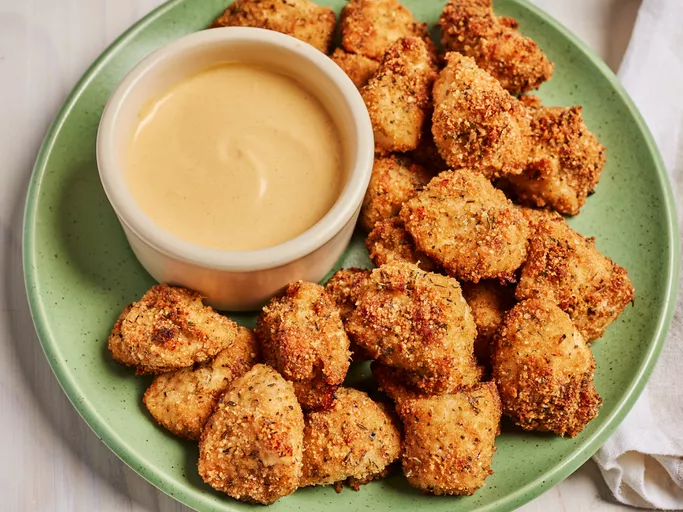

Home
Chicken Nuggets

Description
Chicken nuggets are a real kid-pleaser! Adults will enjoy this recipe for a tasty appetizer, too! Serve warm, with your favorite dipping sauces if desired.
Ingredients
- 3 skinless, boneless chicken breasts
- 1 cup Italian seasoned bread crumbs
- ½ cup grated Parmesan cheese
- 1 tablespoon dried basil
- 1 teaspoon dried thyme
- 1 teaspoon salt
- ½ cup butter, melted
Steps
- Gather all ingredients. Preheat the oven to 400 degrees F (200 degrees C).
- Cut chicken breasts into 1 1/2-inch pieces.
- Mix the bread crumbs, Parmesan, basil, thyme, and salt together well in a medium bowl. Put melted butter in a bowl or dish for dipping.
- Dip chicken pieces into the melted butter first, then coat with the bread crumb mixture.
- Place the well-coated chicken nuggets on a lightly greased cookie sheet in a single layer.
- Bake nuggets in the preheated oven until browned and chicken is cooked through, about 20 minutes.
- Serve and enjoy!